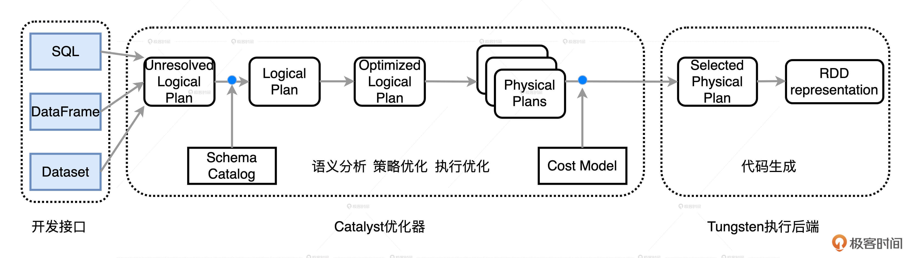
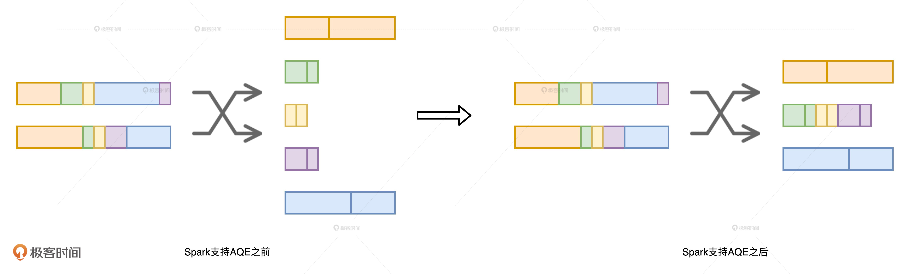
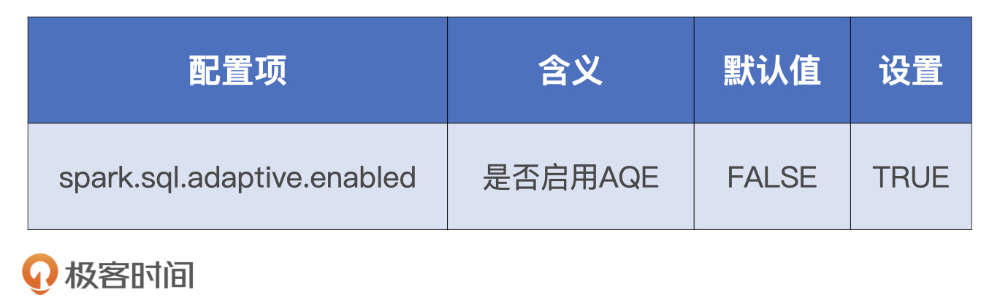

- 00 开篇词 Spark性能调优，你该掌握这些“套路”.md.html
- 01 性能调优的必要性：Spark本身就很快，为啥还需要我调优？.md.html
- 02 性能调优的本质：调优的手段五花八门，该从哪里入手？.md.html
- 03 RDD：为什么你必须要理解弹性分布式数据集？.md.html
- 04 DAG与流水线：到底啥叫“内存计算”？.md.html
- 05 调度系统：“数据不动代码动”到底是什么意思？.md.html
- 06 存储系统：空间换时间，还是时间换空间？.md.html
- 07 内存管理基础：Spark如何高效利用有限的内存空间？.md.html
- 08 应用开发三原则：如何拓展自己的开发边界？.md.html
- 09 调优一筹莫展，配置项速查手册让你事半功倍！（上）.md.html
- 10 调优一筹莫展，配置项速查手册让你事半功倍！（下）.md.html
- 11 为什么说Shuffle是一时无两的性能杀手？.md.html
- 12 广播变量（一）：克制Shuffle，如何一招制胜！.md.html
- 13 广播变量（二）：如何让Spark SQL选择Broadcast Joins？.md.html
- 14 CPU视角：如何高效地利用CPU？.md.html
- 15 内存视角（一）：如何最大化内存的使用效率？.md.html
- 16 内存视角（二）：如何有效避免Cache滥用？.md.html
- 17 内存视角（三）：OOM都是谁的锅？怎么破？.md.html
- 18 磁盘视角：如果内存无限大，磁盘还有用武之地吗？.md.html
- 19 网络视角：如何有效降低网络开销？.md.html
- 20 RDD和DataFrame：既生瑜，何生亮？.md.html
- 21 Catalyst逻辑计划：你的SQL语句是怎么被优化的？（上）.md.html
- 22 Catalyst物理计划：你的SQL语句是怎么被优化的（下）？.md.html
- 23 钨丝计划：Tungsten给开发者带来了哪些福报？.md.html
- 24 Spark 3.0（一）：AQE的3个特性怎么才能用好？.md.html
- 25 Spark 3.0（二）：DPP特性该怎么用？.md.html
- 26 Join Hints指南：不同场景下，如何选择Join策略？.md.html
- 27 大表Join小表：广播变量容不下小表怎么办？.md.html
- 28 大表Join大表（一）：什么是“分而治之”的调优思路？.md.html
- 29 大表Join大表（二）：什么是负隅顽抗的调优思路？.md.html
- 30 应用开发：北京市小客车（汽油车）摇号趋势分析.md.html
- 31 性能调优：手把手带你提升应用的执行性能.md.html
- Spark UI（上）深入解读Spark作业的“体检报告”.md.html
- Spark UI（下）：深入解读Spark作业的“体检报告”.md.html
- 期末考试 “Spark性能调优”100分试卷等你来挑战！.md.html
- 结束语 在时间面前，做一个笃定学习的人.md.html
- 捐赠
08 应用开发三原则：如何拓展自己的开发边界？
你好，我是吴磊。
从今天开始，我们就进入通用性能调优篇的学习了。这一篇，我们会从基本的开发原则、配置项、Shuffle以及硬件资源这四个方面，去学习一些通用的调优方法和技巧，它们会适用于所有的计算场景。
今天这一讲，我们先从应用开发的角度入手，去探讨开发阶段应该遵循的基础原则。如果能在开发阶段就打好基础、防患于未然，业务应用的执行性能往往会有个不错的起点。开发阶段就像学生时代的考卷，虽然有很难的拔高题，但只要我们稳扎稳打，答好送分的基础题，成绩往往不会太差。
这些“基础题”对应的就是工作中一些“常规操作”，比如Filter + Coalesce和用mapPartitions代替map，以及用ReduceByKey代替GroupByKey等等。我相信，你在日常的开发工作中肯定已经积累了不少。但是据我观察，很多同学在拿到这些技巧之后，都会不假思索地“照葫芦画瓢”。不少同学反馈：“试了之后怎么没效果啊？算了，反正能试的都试了，我也实在没有别的调优思路了，就这样吧”。
那么，这种情况该怎么办呢？我认为，最重要的原因可能是你积累的这些“常规操作”还没有形成体系。结合以往的开发经验，我发现这些“常规操作”可以归纳为三类：
- 坐享其成
- 能省则省、能拖则拖
- 跳出单机思维
话不多说，接下来，我就来和你好好聊一聊。
原则一：坐享其成
站在巨人的肩膀上才能看得更远，所以在绞尽脑汁去尝试各种调优技巧之前，我们应该尽可能地充分利用Spark为我们提供的“性能红利”，如钨丝计划、AQE、SQL functions等等。我把这类原则称作“坐享其成”，意思是说我们通过设置相关的配置项，或是调用相应的API去充分享用Spark自身带来的性能优势。
那么，我们都可以利用哪些现成的优势呢？
如何利用钨丝计划的优势？
首先，我们可以利用Databricks在2015年启动的“钨丝计划（Project Tungsten）”。它的优势是，可以通过对数据模型与算法的优化，把Spark应用程序的执行性能提升一个数量级。那这是怎么做到的呢？这就要从它的数据结构说起了。
在数据结构方面，Tungsten自定义了紧凑的二进制格式。这种数据结构在存储效率方面，相比JVM对象存储高出好几个数量级。另外，由于数据结构本身就是紧凑的二进制形式，因此它天然地避免了Java对象序列化与反序列化引入的计算开销。
基于定制化的二进制数据结构，Tungsten利用Java Unsafe API开辟堆外（Off Heap Memory）内存来管理对象。堆外内存有两个天然的优势：一是对于内存占用的估算更精确，二来不需要像JVM Heap那样反复执行垃圾回收。
最后，在运行时，Tungsten用全阶段代码生成（Whol Stage Code Generation）取代火山迭代模型，这不仅可以减少虚函数调用和降低内存访问频率，还能提升CPU cache命中率，做到大幅压缩CPU idle时间，从而提升CPU利用率。
Databricks官方对比实验显示，开启Tungsten前后，应用程序的执行性能可以提升16倍！因此你看，哪怕咱们什么都不做，只要开发的业务应用能够利用到Tungsten提供的种种特性，Spark就能让应用的执行性能有所保障。对于咱们开发者来说，这么大的便宜，干吗不占呢？
如何利用AQE的优势？
除了钨丝计划，我们最应该关注Spark 3.0版本发布的新特性——AQE。AQE（Adaptive Query Execution）全称“自适应查询执行”，它可以在Spark SQL优化的过程中动态地调整执行计划。
我们知道，Spark SQL的优化过程可以大致分为语法分析、语义解析、逻辑计划和物理计划这几个环节。在3.0之前的版本中，Spark仅仅在编译时基于规则和策略遍历AST查询语法树，来优化逻辑计划，一旦基于最佳逻辑计划选定物理执行计划，Spark就会严格遵照物理计划的步骤去机械地执行计算。
而AQE可以让Spark在运行时的不同阶段，结合实时的运行时状态，周期性地动态调整前面的逻辑计划，然后根据再优化的逻辑计划，重新选定最优的物理计划，从而调整运行时后续阶段的执行方式。

你可能会问：“听上去这么厉害，那AQE具体都有哪些改进呢？”AQE主要带来了3个方面的改进，分别是自动分区合并、数据倾斜和Join策略调整。我们一一来看。
首先，自动分区合并很好理解，我们拿Filter与Coalesce来举例。分布式数据集过滤之后，难免有些数据分片的内容所剩无几，甚至为空，所以为了避免多余的调度开销，我们经常会用Coalesce去做手工的分区合并。
另外，在Shuffle的计算过程中，同样也存在分区合并的需求。

以上图为例，我们可以看到，数据表原本有2个分区，Shuffle之后在Reduce阶段产生5个数据分区。由于数据分布不均衡，其中3个分区的数据量很少。对CPU来说，这3个小分区产生的调度开销会是一笔不小的浪费。在Spark支持AQE以前，开发者对此无能为力。现在呢，AQE会自动检测过小的数据分区，并对它们自动合并，根本不需要我们操心了。
其次是数据倾斜（Data Skew），它在数据分析领域中很常见，如果处理不当，很容易导致OOM问题。
比方说，我们要分析每一个微博用户的历史行为。那么，不论是发博量还是互动频次，普通用户与头部用户（明星、网红、大V、媒体）会相差好几个数量级。这个时候，按照用户ID进行分组分析就会产生数据倾斜的问题，而且，同一Executor中的执行任务基本上是平均分配可用内存的。因此，一边是平均的内存供给，一边是有着数量级之差的数据处理需求，数据倾斜严重的Task报出OOM错误也就不足为怪了。
以往处理数据倾斜问题的时候，往往需要我们在应用中手动“加盐”，也就是强行给倾斜的Key添加随机前缀，通过把Key打散来均衡数据在不同节点上的分布。现在，在数据关联（Joins）的场景中，如果AQE发现某张表存在倾斜的数据分片，就会自动对它做加盐处理，同时对另一张表的数据进行复制。除此之外，开发者在自行盐化之前，还需要先统计每一个Key的倾斜情况再决定盐化的幅度。不过，自从有了AQE，这些糟心事交给它搞定就好了。
最后，Join策略调整也不难理解。当两个有序表要进行数据关联的时候，Spark SQL在优化过程中总会选择Sort Merge Join的实现方式。但有一种情况是，其中一个表在排序前需要对数据进行过滤，过滤后的表小到足可以由广播变量容纳。这个时候，Broadcast Join比Sort Merge Join的效率更高。但是，3.0版本之前的优化过程是静态的，做不到动态切换Join方式。
针对这种情况，AQE会根据运行时的统计数据，去动态地调整Join策略，把之前敲定的Sort Merge Join改为Broadcast Join，从而改善应用的执行性能。
说了这么多，对于这些天然的优势，我们到底怎么才能利用好呢？首先，想要利用好Tungsten的优势，你只要抛弃RDD API，采用DataFrame或是Dataset API进行开发就可了，是不是很简单？
不过，AQE功能默认是关闭的，如果我们想要充分利用自动分区合并、自动数据倾斜处理和Join策略调整，需要把相关的配置项打开，具体的操作如下表所示。

总的来说，通过钨丝计划和AQE，我们完全可以实现低投入、高产出，这其实就是坐享其成的核心原则。除此之外，类似的技巧还有用SQL functions或特征转换算子去取代UDF等等。我非常希望你能在开发过程中去主动探索、汇总这些可以拿来即用的技巧，如果有成果，也期待你在留言区分享。
原则二：能省则省、能拖则拖
在很多数据处理场景中，为了快速实现业务需求，我往往会对数据清洗、过滤、提取、关联和聚合等多种操作排列组合来完成开发。这些排列组合的执行性能参差不齐、有好有坏，那我们该怎么找到性能更好的实现方式呢？
这个时候，我们就可以使用第二个原则：“能省则省、能拖则拖”。省的是数据处理量，因为节省数据量就等于节省计算负载，更低的计算负载自然意味着更快的处理速度；拖的是Shuffle操作，因为对于常规数据处理来说，计算步骤越靠后，需要处理的数据量越少，Shuffle操作执行得越晚，需要落盘和分发的数据量就越少，更低的磁盘与网络开销自然意味着更高的执行效率。
实现起来我们可以分3步进行：
- 尽量把能节省数据扫描量和数据处理量的操作往前推；
- 尽力消灭掉Shuffle，省去数据落盘与分发的开销；
- 如果不能干掉Shuffle，尽可能地把涉及Shuffle的操作拖到最后去执行。
接下来，我们再通过一个例子来对这个原则加深理解。
这次的业务背景很简单，我们想要得到两个共现矩阵，一个是物品、用户矩阵，另一个是物品、用户兴趣矩阵。得到这两个矩阵之后，我们要尝试用矩阵分解的方法去计算物品、用户和用户兴趣这3个特征的隐向量（Latent Vectors，也叫隐式向量），这些隐向量最终会用来构建机器学习模型的特征向量（Feature Vectors）。
基于这样的业务背景，代码需要实现的功能是读取用户访问日志，然后构建出这两个矩阵。访问日志以天为单位保存在Parquet格式的文件中，每条记录包含用户ID、物品ID、用户兴趣列表、访问时间、用户属性和物品属性等多个字段。我们需要读取日志记录，先用distinct对记录去重，然后用explode将兴趣列表展开为单个兴趣，接着提取相关字段，最后按照用户访问频次对记录进行过滤并再次去重，最终就得到了所需的共现矩阵。
拿到这样的业务需求之后，你会怎么实现呢？同学小A看完之后，二话不说就实现了如下的代码：
val dates: List[String] = List("2020-01-01", "2020-01-02", "2020-01-03")
val rootPath: String = _
//读取日志文件，去重、并展开userInterestList
def createDF(rootPath: String, date: String): DataFrame = {
val path: String = rootPath + date
val df = spark.read.parquet(path)
.distinct
.withColumn("userInterest", explode(col("userInterestList")))
df
}
//提取字段、过滤，再次去重，把多天的结果用union合并
val distinctItems: DataFrame = dates.map{
case date: String =>
val df: DataFrame = createDF(rootPath, date)
.select("userId", "itemId", "userInterest", "accessFreq")
.filter("accessFreq in ('High', 'Medium')")
.distinct
df
}.reduce(_ union _)
我们不妨来一起分析一下这段代码，其中主要的操作有4个：用distinct去重、用explode做列表展开、用select提取字段和用filter过滤日志记录。因为后3个操作全部是在Stage内完成去内存计算，只有distinct会引入Shuffle，所以我们要重点关注它。distinct一共被调用了两次，一次是读取日志内容之后去重，另一次是得到所需字段后再次去重。
首先，我们把目光集中到第一个distinct操作上：在createDF函数中读取日志记录之后，立即调用distinct去重。要知道，日志记录中包含了很多的字段，distinct引入的Shuffle操作会触发所有数据记录，以及记录中所有字段在网络中全量分发，但我们最终需要的是用户粘性达到一定程度的数据记录，而且只需要其中的用户ID、物品ID和用户兴趣这3个字段。因此，这个distinct实际上在集群中分发了大量我们并不需要的数据，这无疑是一个巨大的浪费。
接着，我们再来看第二个distinct操作：对数据进行展开、抽取、过滤之后，再对记录去重。这次的去重和第一次大不相同，它涉及的Shuffle操作所分发的数据记录没有一条是多余的，记录中仅包含共现矩阵必需的那几个字段。
这个时候我们发现，两个distinct操作都是去重，目的一样，但是第二个distinct操作比第一个更精准，开销也更少，所以我们可以去掉第一个distinct操作。
这样一来，我们也就消灭了一个会引入全量数据分发的Shuffle操作，这个改进对执行性能自然大有裨益。不过，按下葫芦浮起瓢，把第一个distinct干掉之后，紧随其后的explode就浮出了水面。尽管explode不会引入Shuffle，但在内存中展开兴趣列表的时候，它还是会夹带着很多如用户属性、物品属性等等我们并不需要的字段。
因此，我们得把过滤和列剪枝这些可以节省数据访问量的操作尽可能地往前推，把计算开销较大的操作如Shuffle尽量往后拖，从而在整体上降低数据处理的负载和开销。基于这些分析，我们就有了改进版的代码实现，如下所示。
val dates: List[String] = List("2020-01-01", "2020-01-02", "2020-01-03")
val rootPath: String = _
val filePaths: List[String] = dates.map(rootPath + _)
/**
一次性调度所有文件
先进行过滤和列剪枝
然后再展开userInterestList
最后统一去重
*/
val distinctItems = spark.read.parquet(filePaths: _*)
.filter("accessFreq in ('High', 'Medium'))")
.select("userId", "itemId", "userInterestList")
.withColumn("userInterest", explode(col("userInterestList")))
.select("userId", "itemId", "userInterest")
.distinct
在这份代码中，所有能减少数据访问量的操作如filter、select全部被推到最前面，会引入Shuffle的distinct算子则被拖到了最后面。经过实验对比，两版代码在运行时的执行性能相差一倍。因此你看，遵循“能省则省、能拖则拖”的开发原则，往往能帮你避开很多潜在的性能陷阱。
原则三：跳出单机思维模式
那么，开发者遵循上述的两个原则去实现业务逻辑，是不是就万事大吉、高枕无忧了呢？当然不是，我们再来看下面的例子。
为了生成训练样本，我们需要对两张大表进行关联。根据“能省则省、能拖则拖”原则，我们想把其中一张表变小，把Shuffle Join转换为Broadcast Join，这样一来就可以把Shuffle的环节省掉了。
尽管两张表的尺寸都很大，但右表的Payload只有一列，其他列都是Join keys，所以只要我们把Join keys干掉，右表完全可以放到广播变量里。但是，直接干掉Join keys肯定不行，因为左右表数据关联是刚需。那么，我们能否换个方式把它们关联在一起呢？
受Hash Join工作原理的启发，我们想到可以把所有的Join keys拼接在一起，然后用哈希算法生成一个固定长度的字节序列，把它作为新的Join key。这样一来，右表中原始的Join keys就可以拿掉，右表的尺寸也可以大幅削减，小到可以放到广播变量里。同时，新的Join key还能保证左右表中数据的关联关系保持不变，一举两得。
为了对拼接的Join keys进行哈希运算，我们需要事先准备好各种哈希算法，然后再转换左、右表。接到这样的需求之后，同学小A立马在右表上调用了map算子，并且在map算子内通过实例化Util类获取哈希算法，最后在拼接的Join keys上进行哈希运算完成了转换。具体的代码如下所示。
import java.security.MessageDigest
class Util {
val md5: MessageDigest = MessageDigest.getInstance("MD5")
val sha256: MessageDigest = _ //其他哈希算法
}
val df: DataFrame = _
val ds: Dataset[Row] = df.map{
case row: Row =>
val util = new Util()
val s: String = row.getString(0) + row.getString(1) + row.getString(2)
val hashKey: String = util.md5.digest(s.getBytes).map("%02X".format(_)).mkString
(hashKey, row.getInt(3))
}
仔细观察，我们发现这份代码其实还有可以优化的空间。要知道，map算子所囊括的计算是以数据记录（Data Record）为操作粒度的。换句话说，分布式数据集涉及的每一个数据分片中的每一条数据记录，都会触发map算子中的计算逻辑。因此，我们必须谨慎对待map算子中涉及的计算步骤。很显然，map算子之中应该仅仅包含与数据转换有关的计算逻辑，与数据转换无关的计算，都应该提炼到map算子之外。
反观上面的代码，map算子内与数据转换直接相关的操作，是拼接Join keys和计算哈希值。但是，实例化Util对象仅仅是为了获取哈希函数而已，与数据转换无关，因此我们需要把它挪到map算子之外。
只是一行语句而已，我们至于这么较真吗？还真至于，这个实例化的动作每条记录都会触发一次，如果整个数据集有千亿条样本，就会有千亿次的实例化操作！差之毫厘谬以千里，一个小小的计算开销在规模化效应之下会被放大无数倍，演化成不容小觑的性能问题。
val ds: Dataset[Row] = df.mapPartitions(iterator => {
val util = new Util()
val res = iterator.map{
case row=>{
val s: String = row.getString(0) + row.getString(1) + row.getString(2)
val hashKey: String = util.md5.digest(s.getBytes).map("%02X".format(_)).mkString
(hashKey, row.getInt(3)) }}
res
})
类似这种忽视实例化Util操作的行为还有很多，比如在循环语句中反复访问RDD，用临时变量缓存数据转换的中间结果等等。这种不假思索地直入面向过程编程，忽略或无视分布式数据实体的编程模式，我们把它叫做单机思维模式。我们在RDD那一讲也说过，单机思维模式会让开发者在分布式环境中，无意识地引入巨大的计算开销。
但你可能会说：“单机思维模式随处可见，防不胜防，我们该怎么跳出去呢？”
冰冻三尺、非一日之寒，既然是一种思维模式，那么它自然不是一天、两天就能形成的，想要摆脱它自然也不是一件容易的事情。不过，关于跳出单机思维，我这里也有个小技巧要分享给你。当然，这可能需要一点想象力。
你还记得土豆工坊吗？每当你准备开发应用的时候，你都可以在脑海里构造一个土豆工坊，把你需要定义的分布式数据集，安置到工坊流水线上合适的位置。当你需要处理某个数据集的时候，不妨花点时间想一想，得到当前这种土豆形态都需要哪些前提。持续地在脑海里构造土豆工坊，可以持续地加深你对分布式计算过程的理解。假以时日，我相信你一定能摆脱单机思维模式！
小结
在日常的开发工作中，遵循这3个原则，不仅能让你的应用在性能方面有个好的起点，还能让你有意无意地去探索、拓展更多的调优技巧，从而由点及面地积累调优经验。
首先，遵循“坐享其成”的原则，你就可以通过设置相关的配置项，或是调用相应的API充分享用Spark自身带来的性能优势。比如，使用DataFrame或是Dataset API做开发，你就可以坐享Catalyst和Tungsten的各种优化机制。再比如，使用Parquet、ORC等文件格式，去坐享谓词下推带来的数据读取效率。
其次，如果你能够坚持“能省则省、能拖则拖”，尽量把节省数据扫描量和数据处理量的操作往前推，尽可能地把涉及Shuffle的操作拖延到最后去执行，甚至是彻底消灭Shuffle，你自然能够避开很多潜在的性能陷阱。
最后，在日常的开发工作中，我们要谨防单机思维模式，摆脱单机思维模式有利于培养我们以性能为导向的开发习惯。我们可以在开发应用的过程中运用想象力，在脑海中构造一个土豆工坊。把每一个分布式数据集都安插到工坊的流水线上。在尝试获取数据集结果的时候，结合我们在原理篇讲解的调度系统、存储系统和内存管理，去进一步想象要得到计算结果，整个工坊都需要做哪些事情，会带来哪些开销。
最后的最后，我们再来说说归纳这件事的意义和价值。我们之所以把各种开发技巧归纳为开发原则，一方面是遵循这些原则，你能在不知不觉中避开很多性能上的坑。但更重要的是，从这些原则出发，向外推演，我们往往能发现更多的开发技巧，从而能拓展自己的“常规操作”边界，做到举一反三，真正避免“调优思路枯竭”的窘境。
每日一练
- 针对我们今天讲的3个原则，你还能想到哪些案例？
- 除了这3个原则外，你觉得是否还有其他原则需要开发者特别留意？
期待在留言区看到你的思考和答案，我们下一讲见！
© 2019 - 2023 Liangliang Lee. Powered by gin and hexo-theme-book.